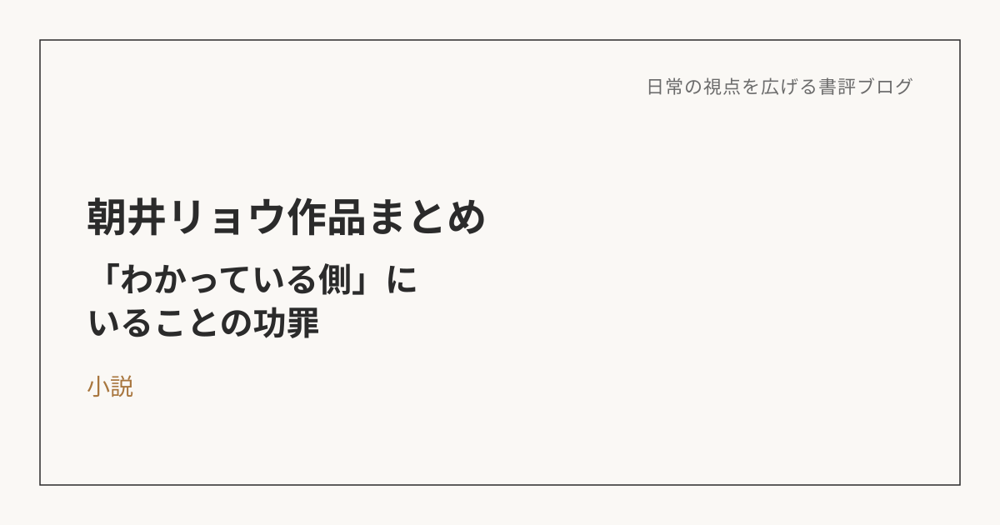

朝井リョウ作品から見えた自分のテーマ――"わかっている側"にいることの功罪
3作品を通じて見えてきたもの
ここ最近、朝井リョウの作品を続けて読んだ。『正欲』『何者』『イン・ザ・メガチャーチ』。それぞれ扱っているテーマは違う。『正欲』は多様性とマジョリティ・マイノリティの関係、『何者』は自己演出とSNS、『イン・ザ・メガチャーチ』は推し活と没入。ただ、1冊ずつ感想を書きながら、自分がそれぞれの作品に対して反応していたポイントを振り返ると、かなり共通するテーマがあることに気づいた。それは、自分が知らず知らずのうちに「わかっている側」に立って、物事や人を判断してしまっていないか、という問いだった。
なぜ、この3作品にここまで反応したのか
そもそも自分は、小説を読んでいて何が楽しいんだろうと考えてみると、自分にとっての「当たり前」や「普通」を考え直すきっかけに出会えたとき、自分とは違う思考や生き方をしている人の価値観に触れたときだ、ということに気づく。朝井リョウの作品は、まさにその「当たり前を揺さぶってくる」小説の代表格で、だからこそ3作品続けて、同じテーマに引っかかり続けたんだと思う。ただ、新しい価値観に触れて「視野が広がった」で満足するだけでは、ただの娯楽や時間つぶしで終わってしまう。そこから自分は何を大事にしたいのかを言語化していくところまでやって、初めて読書が自分を成長させるものになる。この記事も、その言語化の一つの試みだ。
一歩引いて見る側に、ずっと価値を置いてきた
3作品を通じて見えてきたのは、自分は昔から、その世界にそのまま入って幸福を感じる人、与えられた環境の中で淡々と生きる人、何かを信じて身を委ねる人よりも、一歩引いて見る人、構造を理解しようとする人、自分の頭で考えようとする人の方に価値を置いてきたのではないか、ということだった。『イン・ザ・メガチャーチ』では、推し活や宗教に没入する人たちを、最初はどこかで「自分軸がない」「視野が狭い」という目で見ていた。『何者』では、SNS上で何者かっぽく見せることや、他人を批評・分析することの危うさに反応しつつも、批評や分析という行為自体には自分なりの親和性も感じていた。『正欲』では、「普通」という言葉自体がマジョリティによって作られた基準にすぎないこと、そしてその「普通」を無自覚に押し付ける危うさに強く反応していた。つまり自分は一貫して、当たり前の中にそのままいる側ではなく、その当たり前を一歩引いて見る側に、自分を置いてきたのだと思う。
でも、その立場にいること自体が、苦しさにもなっている
ここで大事なのは、自分がその立場に価値を置いてきた一方で、その立場にいること自体が、そのまま苦しさにもなっているということだった。俯瞰して見ることはできる。構造を分析することもできる。でも、その分だけ、素直にその世界に入れない、目の前のことに没入しにくい、疑いを止めにくい、理想や本質を見すぎて苦しくなる、「わかっている側」にいることで逆に動けなくなる、ということも起きている。これは仕事でもかなり同じだと思う。目の前の業務や課題にそのまま入っていける人に対して、どこかで「本質を見ていないのでは」という目を向けてしまうことがある。でも実際には、そういう人たちは単に鈍いのではなく、必要以上に意味づけせず、いまやるべきことに入れているという、別の強さを持っているのかもしれない。俯瞰している自分に誇りを持ってきた一方で、その立場に留まりすぎることの不自由さも、自分は抱えているのだと思う。
揺さぶられた3つの価値観
3作品を通じて、自分の中で特に揺さぶられた価値観は3つあった。
1つ目は、普通や正しさは本当に中立なものなのか、という問い。自分が当たり前だと思っていることも、実際にはただ自分が多数派側にいたから自然に思えていただけかもしれない。
2つ目は、何者かになることと、何者かっぽく見せることは違う、という気づき。何者かになりたい欲求自体は自然なものだけれど、それが他人からどう見られるかだけを起点にしたものになると、中身より先に「それっぽい自分」だけが前に出てしまう。
3つ目は、俯瞰できることだけが成熟ではないのではないか、という問い。視野を広げて構造を見抜くことだけが成熟なのではなく、あえて視野を狭めて、その世界に安心して没入できることにも、別の価値があるのかもしれない。
繰り返し出てきた、自分への問い
作品ごとにテーマは違うけれど、自分の中で繰り返し出てきた問いはかなり共通していた。自分は何に価値があると思い、何にはないと思ってきたのか。理解していることと、生きていることは同じなのか。俯瞰していることは、本当に自由なのか。何かを信じたり、身を委ねたりすることは、本当に未熟さなのか。自分は「わかっている側」にいることで、行動や没入から逃げていないか。俯瞰すること、分析すること、構造を見ること、自分の頭で考えることに価値を置いてきたのは、間違いではないし、自分の大きな強みでもある。ただ、その価値観が強すぎると、素直に何かを信じること、好きになること、目の前のことに入ること、その世界の中で幸福を感じることを、どこかで低く見積もってしまう。そしてそのことが、自分自身をも苦しめていたのではないかと思う。
これからの自分にとっての意味
3作品を通じて得た一番大きな意味は、自分の価値観の偏りに気づけたことだと思う。構造を見る力、物事を一歩引いて考える力、当たり前を疑う力、言葉にして整理する力は、これからも大事にしていきたい。ただ同時に、それだけが唯一の成熟ではないとも理解したい。
たとえば、誰かに相談を受けたときに、つい構造や背景から整理して「本質的にはこういうことだよね」と分析から入ってしまう癖がある。それ自体は役に立つこともあるけれど、時には分析を挟まず、ただその場の感情にそのまま入って一緒に驚いたり喜んだりする、という関わり方があってもいい。必要なときには俯瞰する。でも、必要なときには目の前のことに入る。構造を見る。でも、その世界の中で幸福を感じることも否定しない。正しさを疑う。でも、何も信じられなくなるところまでは行かない。そういうバランスを、自分の中に少しずつ作っていきたいと思う。
※本記事はNotionに書き溜めた読書メモをもとに、AIの編集サポートを受けて構成しています。